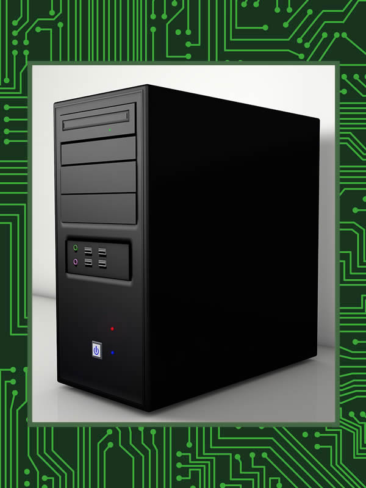
------ NFT ------
Gabinete
---- Prova-de-Conhecimento ----
- mostrar/indicar um gabinete
- mostrar/explanar fator de forma do gabinete
- mostrar/explanar baias do gabinete
- mostrar tipos de tampas laterais do gabinete
- mostrar/indicar o painel frontal
- mostrar/apresentar botões, LEDs e entradas do painel frontal
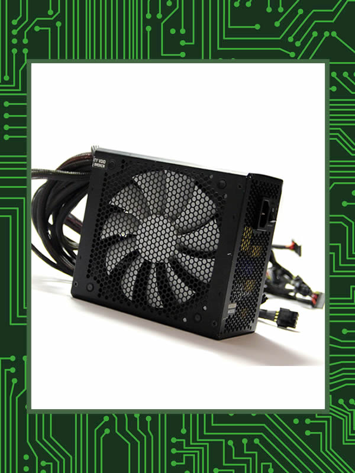
------ NFT ------
Fonte de Alimentação
---- Prova-de-Conhecimento ----
- mostrar/indicar o componente fonte de alimentação
- apresentar/explanar potências das fontes de alimentação
- apresentar/explanar selos e certificados das fontes de alimentação
- apresentar/explanar conectores da fonte de alimentação
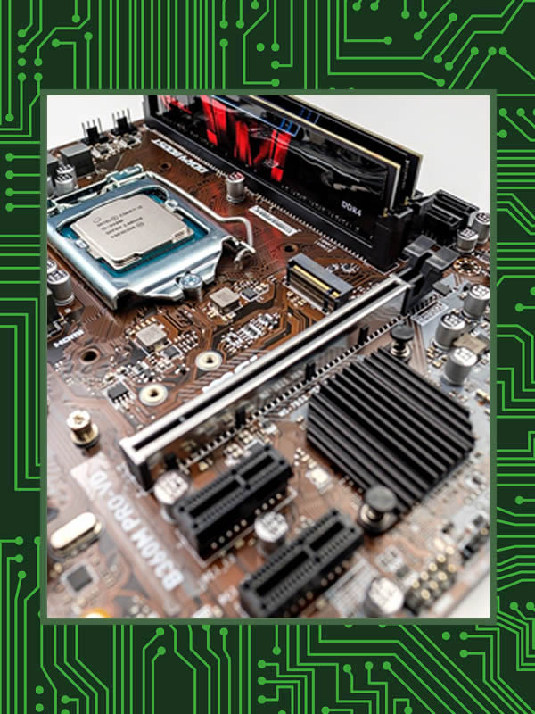
------ NFT ------
Placa-Mãe
---- Prova-de-Conhecimento ----
- mostrar/indicar uma placa-mãe
- apresentar/explanar entradas de alimentação da placa mãe
- mostrar/indicar portas satas da placa mãe
- mostrar/indicar slots de memória ram da placa mãe
- mostrar/indicar slots de expansão da placa mãe
- mostrar/indicar o soquete do processador na placa mãe
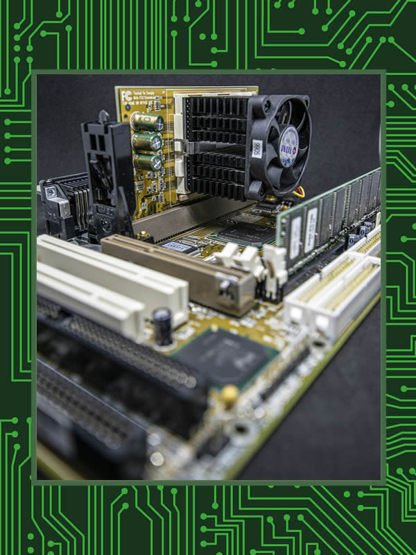
------ NFT ------
Placa-Mãe: Slots de Extensão
---- Prova-de-Conhecimento ----
- apresentar/explanar tipos de slots antigos
- apresentar/explanar tipos de slots de expansão de placas mães
- apresentar/explanar tamanhos e padrões dos slots PCI-Express das placas mães
- apresentar/explanar larguras de banda dos slots PCI-Express
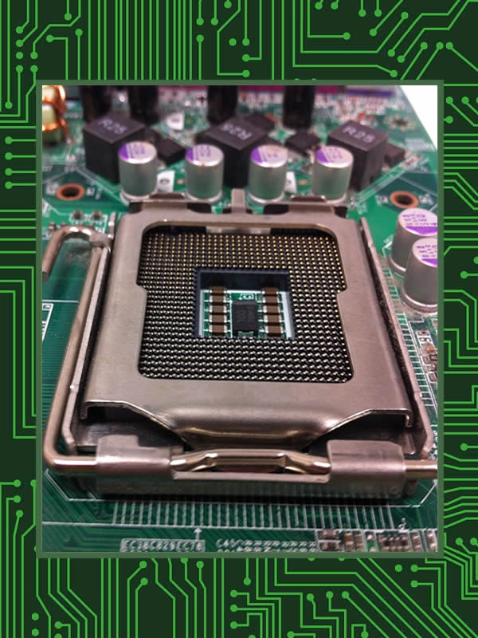
------ NFT ------
Placa-Mãe: Soquetes
---- Prova-de-Conhecimento ----
- mostrar/indicar o soquete do processador na placa mãe
- apresentar/explanar gerações de soquete para AMD
- apresentar/explanar gerações de soquete para Intel
- comparar soquetes AMD e Intel
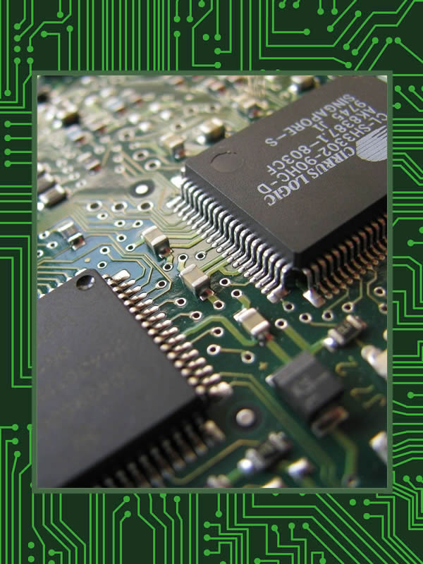
------ NFT ------
Placa-Mãe: Chips, Barramento e Onboards
---- Prova-de-Conhecimento ----
- apresentar/explanar chips ponte sul e ponte norte da placa mãe
- apresentar/explanar bios e memória rom
- apresentar/explanar saídas de alimentação da placa mãe
- apresentar/explanar barramentos da placa mãe
- apresentar/explanar dispositivos onboard da placa mãe
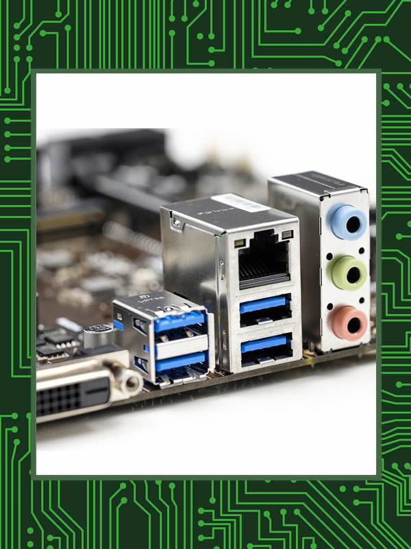
------ NFT ------
Placa-Mãe: Painel I/O
---- Prova-de-Conhecimento ----
- mostrar/indicar o painel traseiro
- apresentar/explanar portas I/O do painel traseiro
- apresentar/explanar portas I/O antigas
- apresentar/explanar formatos, padrões e taxas de transferências das portas USB
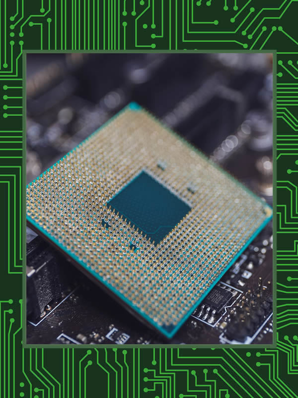
------ NFT ------
Unidade Central de Processamento (CPU)
---- Prova-de-Conhecimento ----
- mostrar/indicar a unidade central de processamento (CPU)
- apresentar/explanar modelos de CPUs
- apresentar/explanar núcleos físicos e lógicos
- apresentar/explanar arquiteturas de CPUs
- apresentar/explanar clock's de CPUs
- apresentar/explanar memórias CACHE das CPUs
- apresentar/explanar APUs e iGPUs
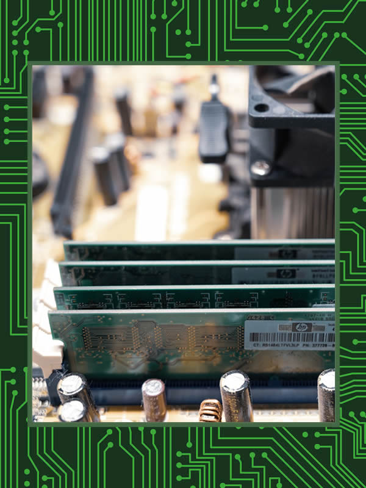
------ NFT ------
Random Access Memory (RAM)
---- Prova-de-Conhecimento ----
- mostrar/indicar uma memória RAM
- apresentar/explanar capacidades, frequências e padrões das memórias RAM
- apresentar/explanar capacidades, frequências e padrões das memórias RAM antigas
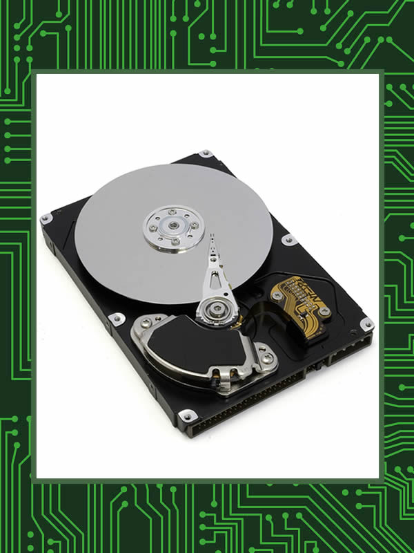
------ NFT ------
Armazenamento HD/SSD
---- Prova-de-Conhecimento ----
- mostrar/indicar o componente de armazenamento disco rígido (HD)
- apresentar/explanar capacidades, dimensões e velocidades rpm dos HDs
- mostrar/indicar o componente de armazenamento SSD
- apresentar/explanar capacidades, formatos e velocidades r/w dos SSDs

------ NFT ------
Placas Offboard
---- Prova-de-Conhecimento ----
- mostrar/indicar o componente placa de rede
- mostrar/indicar o componente placa de som
- mostrar/indicar o componente placa de WIFI/Bluetooth
- mostrar/indicar o componente placa de captura (CFTV, HDMI IN)
- mostrar/indicar o componente placa de vídeo
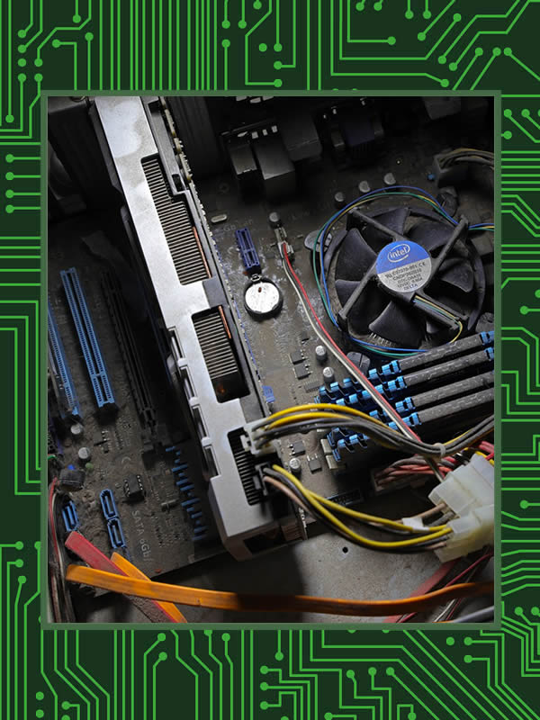
------ NFT ------
Unidade de Processamnto Gráfico (GPU)
---- Prova-de-Conhecimento ----
- apresentar/explanar processamento de flops e tecnologias de GPUs
- apresentar/explanar padrões e capacidades de memórias das placas de vídeo
- comparar modelos inferiores e superiores de GPUs (inclusive preços)

------ NFT ------
Refrigeração (Coolers)
---- Prova-de-Conhecimento ----
- mostrar/indicar aircoolers, watercoolers e ventoínhas
- mostrar/explanar modelos de componentes de refrigeração
- mostrar/explanar refrigeração ativa
- mostrar/explanar refrigeração passiva
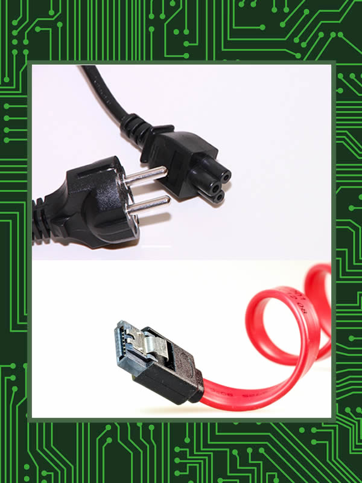
------ NFT ------
Cabos
---- Prova-de-Conhecimento ----
- mostrar/indicar cabos flats e satas
- mostrar/indicar cabos de força (energia)
- mostrar/indicar tipos de cabos USB
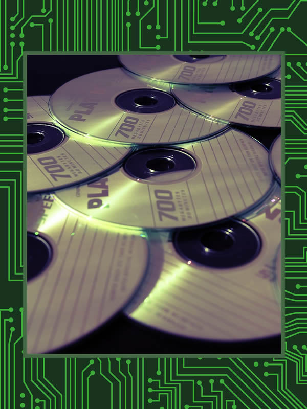
------ NFT ------
Armazenamento Óptico
---- Prova-de-Conhecimento ----
- mostrar/indicar o componente unidade de CD/DVD e BLU-RAY
- apresentar/explanar velocidades de leituras de gravaçoes das unidades de CD/DVD
- apresentar/explanar discos ópticos CD/DVD (CD-R, CD-RW, DVD-R, DVD+R, DVD-RW)
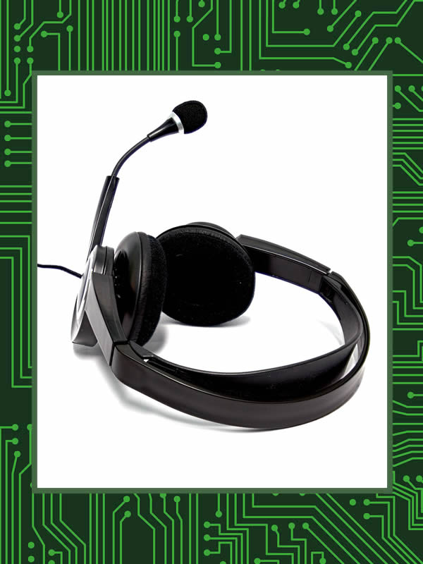
------ NFT ------
Periféricos
---- Prova-de-Conhecimento ----
- mostrar/indicar o periférico leitor de cartões
- mostrar/indicar o periférico - monitor
- mostrar/indicar o periférico - mouse
- mostrar/indicar o periférico - teclado
- mostrar/indicar o periférico - microfone
- mostrar/indicar o periférico - gamepad
- mostrar/indicar o periférico - joystick
- mostrar/indicar o periférico - leitor de impressões digitais
- mostrar/indicar o periférico - webcam
- mostrar/indicar o periférico - touchpad
- mostrar/indicar o periférico - touchscreen
- mostrar/indicar o periférico - mesa digitalizadora
- mostrar/indicar o periférico - caixas de som e subwoofers
- mostrar/indicar o periférico - impressora
- mostrar/indicar o periférico - fone de ouvido
- mostrar/indicar o periférico - headset VR
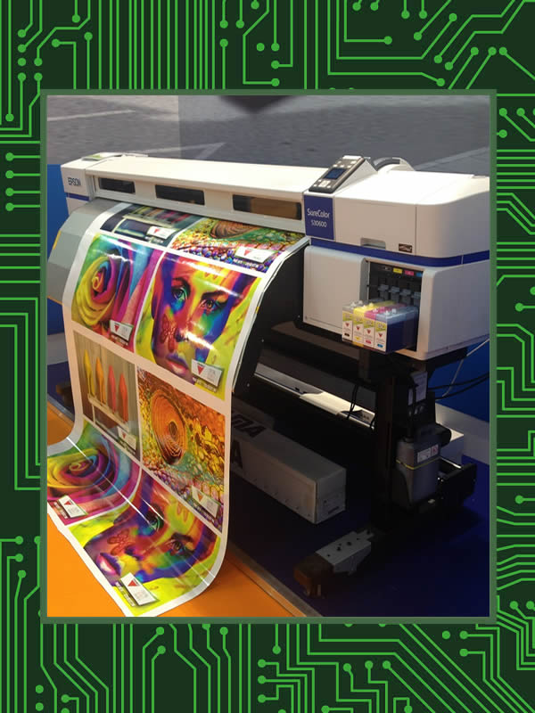
------ NFT ------
Impressoras/Scanners
---- Prova-de-Conhecimento ----
- mostrar/indicar o periférico - impressora
- apresentar/explanar alguns tipos de impressoras
- mostrar/indicar o periférico - scanner de mesa
- mostrar/indicar o periférico - scanner de mão
- mostrar/indicar o periférico - plotter
- mostrar/indicar o periférico - impressora multifuncional
- mostrar/indicar o periférico - impressora 3D
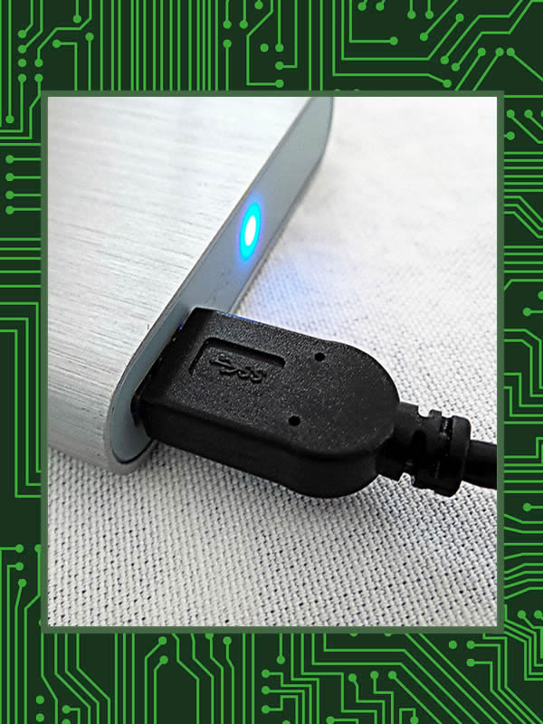
------ NFT ------
Periféricos (Componentes) Externos
---- Prova-de-Conhecimento ----
- mostrar/indicar o periférico externo de armazenamento (SSD e HD)
- mostrar/indicar o periférico externo - adaptador de rede ethernet
- mostrar/indicar o periférico externo - adaptador de WIFI e/ou Bluetooth
- mostrar/indicar o periférico externo - adaptador de captura de vídeo
- mostrar/indicar o periférico externo - unidade de CD/DVD e BLU-RAY
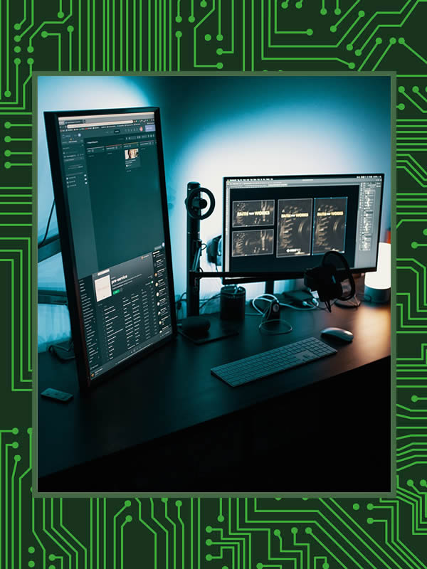
------ NFT ------
Monitores
---- Prova-de-Conhecimento ----
- apresentar/explanar tecnologias, resoluções, proporções dos monitores
- apresentar/explanar tipos de paineis e taxas de atualizações dos monitores
- mostrar/indicar entradas de vídeo de monitores
- mostrar/indicar botões de controle do monitor
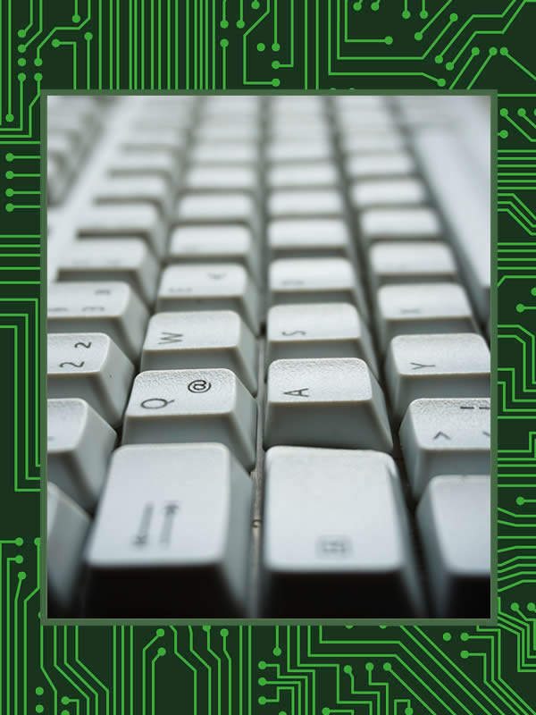
------ NFT ------
Teclado (Keyboard)
---- Prova-de-Conhecimento ----
- apresentar/explanar padrões regionais de teclados
- apresentar/explanar padrões de teclas (membrana, mecânico)
- apresentar/explanar funções de algumas teclas